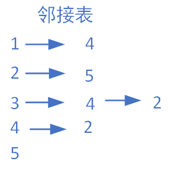
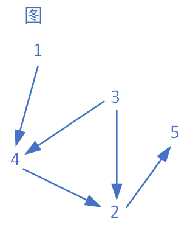

回溯 深搜 递归与函数栈
各位晚上好，今天我们来谈谈代码里面一些有趣的东西，原因是看到这样的评论”回溯是编程的门槛，连这个都不能理解的建议别学编程了“，我相当生气，我认为只要深刻理解回溯的原理，大家就可以像我这种笨蛋一样轻松地写出回溯算法了！
前言
- 这篇文章本质是自娱自乐产物，作者只是像个小朋友一样展示自己仅会的一点东西
- 不能保证各位能够看懂，我希望自己尽最大努力吧(～￣▽￣)～
- 作者希望各位至少理解一些数据结构和代码知识，至少稍微了解一些栈的特性，这应该不算难的
- 回溯算法是相当有趣且有用的东西，希望你也能和我一样喜欢这个算法！
- 因为各位的了解程度不同，我希望各位根据自己的需求来了解各个部分的内容
回溯是什么？
回溯（recall），又称回溯法或试探法，是计算机领域的一种搜索算法。其基本思想是从问题初始状态出发，通过深度优先策略遍历解空间树，遇到无效路径时回退到上一状态继续试探，直至找到全部解或单一可行解。该算法采用系统性搜索与跳跃性剪枝结合的方式，通过限界函数排除无效子树提升效率。
这是百度搜索出来的东西，我本人不敢随意定义这个算法，我的理解是回溯的本质是函数退栈，说到底发生在递归中的事情，每一个函数在都会保存传入的参数，在这个函数结束时这些临时参数也会对应结束。 回溯或许更像是树状的结构？我们应该把握两种树的思维和栈的思维，空口白话我也懒得说了，我们从代码开始了解吧
二叉树的搜索
二叉树的前中后序搜索应该是最能体现递归思想的，用C++代码可以这样描述
前序遍历
#include <iostream>
using namespace std;
// 二叉树节点结构体
struct TreeNode {
int val;
TreeNode* left;
TreeNode* right;
// 构造函数
TreeNode(int x) : val(x), left(NULL), right(NULL) {}
};
void preOrder(TreeNode* root) {
if (root == NULL) return;
cout << root->val << " "; // 打印当前节点
preOrder(root->left); // 左子树
preOrder(root->right); // 右子树
}
int main() {
// 构建二叉树
TreeNode* root = new TreeNode(1);
root->left = new TreeNode(2);
root->right = new TreeNode(3);
root->left->left = new TreeNode(4);
root->left->right = new TreeNode(5);
// 执行遍历
preOrder(root);
cout << endl;
return 0;
}
后续我们会使用visio作图辅助

这是我们构建的二叉树，让我们看看先序遍历是怎么搜索它的吧！
 画这样一张图挺累人的，不过这确实是先序遍历的工作流程。我需要这样说明
* 压入函数：在主函数调用先序函数时或者在先序函数中调用先序函数时
* 弹出函数：函数处理空节点返回或者函数执行结束（因为是void类型）
你可能在教科书上看见这样的话“可以将递归算法转换为非递归算法，通常需要借助栈来实现这种转换”这是因为递归的运行本质上也就是在函数栈中放入函数与它的参数的过程
画这样一张图挺累人的，不过这确实是先序遍历的工作流程。我需要这样说明
* 压入函数：在主函数调用先序函数时或者在先序函数中调用先序函数时
* 弹出函数：函数处理空节点返回或者函数执行结束（因为是void类型）
你可能在教科书上看见这样的话“可以将递归算法转换为非递归算法，通常需要借助栈来实现这种转换”这是因为递归的运行本质上也就是在函数栈中放入函数与它的参数的过程
中序遍历
同样我们稍微改变一下函数可以变成这样
#include <iostream>
using namespace std;
// 二叉树节点结构体
struct TreeNode {
int val;
TreeNode* left;
TreeNode* right;
// 构造函数
TreeNode(int x) : val(x), left(NULL), right(NULL) {}
};
void midOrder(TreeNode* root) {
if (root == NULL) return;
midOrder(root->left); // 左子树
cout << root->val << " "; // 打印当前节点
midOrder(root->right); // 右子树
}
int main() {
// 构建二叉树
TreeNode* root = new TreeNode(1);
root->left = new TreeNode(2);
root->right = new TreeNode(3);
root->left->left = new TreeNode(4);
root->left->right = new TreeNode(5);
// 执行遍历
midOrder(root);
cout << endl;
return 0;
}
后序遍历同理
栈与递归
我们知道递归函数可以用栈来实现，那我们当然可以使用栈来模拟二叉树的遍历过程
前序遍历
前序遍历的迭代遍历思路如下：创建并初始化存储节点的栈，压入根节点，接下来访问并弹出栈顶元素，如果孩子节点存在先压入右节点再压入左节点。这里压入顺序的原因是我们需要先访问左节点，所以把左节点放在右边
#include <iostream>
#include <stack>
using namespace std;
// 二叉树节点结构体
typedef struct TreeNode {
int val;
TreeNode* left;
TreeNode* right;
// 构造函数
TreeNode(int x) : val(x), left(NULL), right(NULL) {}
}TreeNode;
int main() {
// 构建二叉树
TreeNode* root = new TreeNode(1);
root->left = new TreeNode(2);
root->right = new TreeNode(3);
root->left->left = new TreeNode(4);
root->left->right = new TreeNode(5);
//迭代实现前序遍历
stack<TreeNode*> S;
TreeNode* node;
S.push(root);
while (!S.empty()) {
node = S.top();
S.pop();
cout << node->val<<" ";
if (node->right) S.push(node->right);//压入右节点
if (node->left) S.push(node->left); //压入左节点
}
return 0;
}
相当简单不是吗，各位可以自行绘制入栈的顺序图
中序遍历
中序遍历可能要稍微难一些，不过搞清楚逻辑也相当简单，记住中序遍历的顺序是左->根->右，思路如下： 创建并初始化一个存储树节点的栈，设置cur指针当前指向根节点，进入迭代后进行判断，如果cur指针存在，压入cur指针指向节点，cur指向cur的左孩子节点，如果cur指针不存在，cur指向栈顶元素，说明这里是“最左节点”打印并弹出栈顶，cur指向cur的右孩子节点
#include <iostream>
#include <stack>
using namespace std;
// 二叉树节点结构体
typedef struct TreeNode {
int val;
TreeNode* left;
TreeNode* right;
// 构造函数
TreeNode(int x) : val(x), left(NULL), right(NULL) {}
}TreeNode;
int main() {
// 构建二叉树
TreeNode* root = new TreeNode(1);
root->left = new TreeNode(2);
root->right = new TreeNode(3);
root->left->left = new TreeNode(4);
root->left->right = new TreeNode(5);
//迭代实现前序遍历
stack<TreeNode*> S;
TreeNode* node;
TreeNode* cur = root;
while (cur!= nullptr || !S.empty()) { //小心这里的判断条件
if (cur != nullptr) {
S.push(cur); //压入cur指针
cur = cur->left; //向左探索
}
else {
cur = S.top();
cout << cur->val << " ";
S.pop(); //cur修改为栈顶，弹出栈顶并打印
cur = cur->right; //cur修改为栈顶的右孩子
}
}
return 0;
}
虽然干看代码有点麻烦，请大家绘制一下栈的运行过程与cur的指向过程，一定能轻松理解的
后序遍历
对于后序遍历会有些麻烦，因为我们并不方便提前存储孩子节点后再找到父节点，我的建议是因为后序遍历是左->右->根,只需要稍微修改一下先序遍历的代码逆向输出即可
#include <iostream>
#include <stack>
using namespace std;
// 二叉树节点结构体
typedef struct TreeNode {
int val;
TreeNode* left;
TreeNode* right;
// 构造函数
TreeNode(int x) : val(x), left(NULL), right(NULL) {}
}TreeNode;
int main() {
// 构建二叉树
TreeNode* root = new TreeNode(1);
root->left = new TreeNode(2);
root->right = new TreeNode(3);
root->left->left = new TreeNode(4);
root->left->right = new TreeNode(5);
//迭代实现前序遍历
stack <int> S_result; //结果栈
stack<TreeNode*> S;
TreeNode* node;
S.push(root);
while (!S.empty()) {
node = S.top();
S.pop();
S_result.push(node->val);
//注意这里的压入顺序
if (node->left) S.push(node->left); //压入左节点
if (node->right) S.push(node->right);//压入右节点
}
while (!S_result.empty()) { //逆序打印
cout << S_result.top()<<" ";
S_result.pop();
}
return 0;
}
这里我们使用了栈来存储前序遍历的结果值，逆序输出有很多方法各位随意使用一种即可
使用栈来实现其他递归函数吧！
斐波那契
各位对于递归函数一定学过最经典的那个 斐波那契数列，在递归算法里面属于新手史莱姆级别的，我们用递归和栈来实现它吧！ 斐波那契数列是一组递推定义的无穷数列，核心规律是：从第 3 项开始，每一项的值都等于前两项之和。 顺序为：0 1 1 2 3 5 8
#include <iostream>
using namespace std;
int Fibonacci(int n) {
if (n == 0) return 0;
if (n == 1) return 1;
return Fibonacci(n - 1) + Fibonacci(n - 2);
}
int main() {
int n;
while (true) {
cin >> n;
cout << Fibonacci(n);
cout << endl;
}
}
相信各位应该能轻松理解这个
不过在使用栈之前，各位如果输入99或者更高就几乎不能计算了，因为这个代码的时间复杂度是$O(2^n)$，有没有优化的方法呢，有的，我的朋友，肯定有 思路是使用一个数组存储斐波那契对应的数组，也就是哈希表，如果哈希表里面存在对应值就不需要再计算了，这样可以避免重复计算已经算过的值，为此我们需要一个全局变量
#include <iostream>
using namespace std;
long long Fhash[1000];
long long Fibonacci(long long n) {
if (Fhash[n] != -1) {
return Fhash[n];
}
else {
Fhash[n]= Fibonacci(n - 1) + Fibonacci(n - 2);
return Fhash[n];
}
}
int main() {
long long n;
memset(Fhash, -1, sizeof(Fhash));//初始化为-1
Fhash[0] = 0;
Fhash[1] = 1;
while (true) {
cin >> n;
cout << Fibonacci(n);
cout << endl;
}
}
很可惜是因为99连long long都会溢出，不过各位可以看到效率相当快
Fuction 这种有趣的思想我是在这里知道的，本质是空间换时间
进入正题，我们使用栈来实现这个代码吧
#include <iostream>
#include<stack>
using namespace std;
int main() {
stack<int> S;
S.push(0);
S.push(1);
int n;
cin >> n;
if (n == 0) {
cout << 0;
}
else if (n == 1) {
cout << 1;
}
else {
int count = n - 1;
while (count--) {
int num1 = S.top();
S.pop();
int num2 = S.top();
S.pop();
S.push(num1);
S.push(num1 + num2);
}
cout << S.top();
}
}
相当简单的思路
汉诺塔
汉诺塔可能是递归初学者的难题，因为汉诺塔使用手动模拟比较困难，难以思考完全。不过递归的优势是我们只需要思考单层逻辑，思路如下： 假设我们需要从A柱将n层汉诺塔移动到C柱，借助B柱辅助 1. 将n-1层汉诺塔从A柱移动到B柱，借助C柱辅助 2. 将第n层汉诺塔从A柱移动到C柱，借助B柱辅助 3. 将n-1层汉诺塔从B柱移动到C柱，借助A柱辅助 代码如下：
#include <iostream>
using namespace std;
//from为起始柱，mid为辅助主,to为目标柱
void hanoi(int n,char from,char mid,char to) {
if (n == 1) {// 单层逻辑不需要递归了
cout << "将第" << n << "层圆盘从 " << from << " 柱移动到 " << to << " 柱" << endl;
return;
}
hanoi(n - 1, from, to, mid);//步骤一，将n-1层汉诺塔从A柱移动到B柱，借助C柱辅助
cout << "将第" << n << "层圆盘从 " << from << " 柱移动到 " << to << " 柱" << endl;//步骤二，将第n层汉诺塔从A柱移动到C柱，借助B柱辅助
hanoi(n - 1, mid, from, to);//步骤三，将n-1层汉诺塔从B柱移动到C柱，借助A柱辅助
}
int main() {
int n;
cout << "请输入汉诺塔的层数：";
cin >> n;
hanoi(n, 'A', 'B', 'C');
return 0;
}
作者初学的时候想这个逻辑想了一下午，怎么样，很简单吧
我们来试试更困难的用栈来实现汉诺塔吧！记住我们的思路，用栈模拟实际上是存取函数参数的过程，就像我们的斐波那契那里的逻辑一样，因为汉诺塔的参数很多，我们使用结构体来实现存储。这里比较有趣的是，观察我们的函数有两种处理 （名词是我编的），一种的递归处理，比如这种hanoi(n - 1, from, mid, to);，我们进入下一层函数中再处理，另一种是单层处理，收到参数后直接处理不进入下一层逻辑cout << "将第" << n << "层圆盘从 " << from << " 柱移动到 " << to << " 柱" << endl;，为了标记z这两种逻辑我们需要额外引入一个参数。如果你没有忘记我们在先序遍历的处理顺序的话，实际上我们加入参数的顺序是逆向的，也就是先加入任务三，在加入任务二，最后加入任务一
思路如下：
1. 首先构造汉诺塔任务结构体，存入参数和处理逻辑，并且实现构造函数
2. 构造汉诺塔任务栈，将初始任务加入栈中
3. 进入迭代，提取栈顶任务，根据栈顶任务判断，若满足n==1或者为单层处理（isExec= =true）直接处理打印。否则按照顺序加入任务三，任务二，任务一
#include <iostream>
#include <stack>
using namespace std;
//汉诺塔任务状态结构体
struct HanoiTask {
int n;
char from;
char mid;
char to;
bool isExecuted;//处理逻辑，true表示单层处理，false表示递归处理
HanoiTask(int n_, char from_, char mid_, char to_, bool isExecuted_)
:n(n_),from(from_),mid(mid_),to(to_),isExecuted(isExecuted_){}
};
// 2. 汉诺塔迭代函数（基于栈）
void hanoiTowerIterative(int n, char from, char mid, char to) {
// 定义存储任务的栈
stack<HanoiTask> taskStack;
HanoiTask task(n, from, mid, to,false);
taskStack.push(task);
// 循环处理栈中的任务，直到栈为空
while (!taskStack.empty()) {
// 弹出栈顶任务
HanoiTask curTask = taskStack.top();
taskStack.pop();
int curN = curTask.n;
char curFrom = curTask.from;
char curMid = curTask.mid;
char curTo = curTask.to;
bool isExec = curTask.isExecuted;
if (curN == 1 || isExec) { //当只有一层或者是单层逻辑时立即处理
cout << "将第" << curN << "层圆盘从 " << curFrom << " 柱移动到 " << curTo << " 柱" << endl;
continue;
}
HanoiTask task1(curN - 1, curFrom, curTo, curMid, false);
HanoiTask task2(curN, curFrom, curMid, curTo, true);
HanoiTask task3(curN - 1, curMid, curFrom, curTo, false);
//为了让任务一在栈顶，我们逆序压入栈中
taskStack.push(task3);//任务三，将n-1层汉诺塔从B柱移动到C柱，借助A柱辅助
taskStack.push(task2);//任务二，将第n层汉诺塔从A柱移动到C柱，借助B柱辅助
taskStack.push(task1);//任务一，将n-1层汉诺塔从A柱移动到B柱，借助C柱辅助
}
}
int main() {
int n;
cout << "请输入汉诺塔的层数：";
cin >> n;
hanoiTowerIterative(n, 'A', 'B', 'C');
return 0;
}
怎么样，这个思路相当有趣吧，我们之前使用了赖皮的方法来处理二叉树的后序遍历，拥有这个方法，我们几乎可以把一切递归函数改写成栈的形式
#include <iostream>
#include<stack>
using namespace std;
// 二叉树节点结构体
typedef struct TreeNode {
int val;
TreeNode* left;
TreeNode* right;
bool isExecuted;
// 构造函数
TreeNode(int x) : val(x), left(NULL), right(NULL), isExecuted(false) {}
//构造函数
TreeNode(int val_, TreeNode* left_, TreeNode* right_, bool isExecuted_)
: val(val_), left(left_), right(right_), isExecuted(isExecuted_) {}
}TreeNode;
int main() {
// 构建二叉树
TreeNode* root = new TreeNode(1);
root->left = new TreeNode(2);
root->right = new TreeNode(3);
root->left->left = new TreeNode(4);
root->left->right = new TreeNode(5);
stack <TreeNode*> S;
S.push(root);
while (!S.empty()) {
TreeNode* node = S.top();
S.pop();
if (node->isExecuted) { //单层逻辑
cout << node->val << " ";
continue;
}
//我们需要逆向加入栈中，也就是根，右，左的顺序
TreeNode* node1 = node;
node1->isExecuted = true;//修改isExecuted
S.push(node1);//加入根
if (node->right) {
TreeNode* node2 = node1->right;
S.push(node2);//加入右节点
}
if (node->left) {
TreeNode* node3 = node1->left;
S.push(node3);//加入左节点
}
}
}
深度优先搜索
相信各位如果学过数据结构与图论的话，深搜优先搜索一定不陌生，深搜也就是一条路走到底，搜索到无法搜索为止，不过大家如果只是完成数据结构课本上的知识对于图的构造以及数据输入输出可能会不太熟悉，我们在练习中完成吧！
孤岛计数
孤岛计数 虽然各位可能在课本中非常熟悉深搜优先搜索，但要写出完整代码或许不是一件容易的事情，对于这道题给出的数据，我们可以选用临接矩阵来实现，以下是思路 1. 构建临接矩阵结构体（实际上这里临接矩阵也可以使用数组直接代替，为了后面的学习我们还是试着练习一下构建临接矩阵吧）、方向数组以及标记数组 2. 初始化临接矩阵，标记数组。输入案例给出参数 3. 深搜优先函数。标记当前坐标；向四个方向探索并获得其新坐标；在探索时按照以下顺序排除，超界坐标，已探索坐标，非陆地坐标（注意超界坐标必须放在第一否则会越界）；传入新坐标进入下一级探索 4. 在主函数中搜索岛屿，从未标记的陆地开始进入深搜，每次深搜都表示一个整体岛屿，计数加一 5. 返回结果
#include <iostream>
using namespace std;
#define MaxVex 50 //最大顶点数
typedef struct {
int vex[MaxVex];//顶点表
int edge[MaxVex][MaxVex];//邻接矩阵
int Vexnum, arcnum;
}MGraph;
int dir[4][2] = { 0,1,1,0,0,-1,-1,0 };//方向数组
int visited[MaxVex][MaxVex];//标记数组
void dfs(MGraph &G, int n, int m,int x,int y) {
visited[x][y] = 1;
for (int i = 0; i < 4; i++) {//向四个方向扩展
int cur_x = x + dir[i][0];
int cur_y = y + dir[i][1];
if ((cur_x <= 0 || cur_x > n) || (cur_y <= 0 || cur_y > m))
continue;//搜索超界,注意最先确保不超界
if (visited[cur_x][cur_y] == 1)
continue;//已被搜索过
if (G.edge[cur_x][cur_y] == 0)
continue;//非岛屿
dfs(G, n, m, cur_x, cur_y);
}
}
int main() {
int n, m;
cin >> n >> m;
int t;
int result_inland = 0;
MGraph G;
for (int i = 1; i <= n; i++) {
for (int j = 1; j <= m; j++) {
G.edge[i][j] = 0;//初始化临接矩阵
cin >> t;
G.edge[i][j] = t;//1表示陆地，0表示水
}
}
for (int i = 1; i <= n; i++) {
for (int j = 1; j <= m; j++) {
visited[i][j] = 0;
}
}//初始化标记数组
for (int i = 1; i <= n; i++) {
for (int j = 1; j <= m; j++) {
if (visited[i][j] == 0 && G.edge[i][j] == 1) { //从未被标记的岛屿开始
result_inland++;
dfs(G, n, m, i, j);
}
}
}
cout << result_inland;
return 0;
}
各位有兴趣也可以尝试一下广度优先搜索，是利用队列辅助实现的搜索方式，相信各位也能轻松掌握，这个网站上也有很多图论算法练习
奇怪的电梯
各位可能觉得我们的题目有点简单的？那我们再练习一点更加有趣更加复杂的？ 奇怪的电梯 本题实际上属于图论题目，希望大家认真理解题目后想起我们熟悉的另一种存储图的结构——临接表
稍微试着将看起来不像是图的题目转化为图吧 

实际上转化为了在图中的最短路径问题，各位在学习图论时一定学习了不少最短路问题的解决方法，比如迪杰斯特拉或者floyd，在无权图中当然也可以使用广度优先搜索来实现，本质上深搜也可以实现这个过程，因为深搜本质就是探索每一段路径
值得注意的有两个问题，死循环和时间复杂度 先说第一个，如果这个图存在回路，我们单纯深搜会陷入死循环，我们知道这也是使用标记数组的原因，不过标记数组的问题是，如果我在之前就探索了a点，剩下的路径即使存在更短因为a点已经被标记无法继续探索了。
怎么办呢？原因就在于我们的标记数组居然是全局变量！这很重要吗？当然！全局变量意味着除了我们手动恢复标记意外无法通过退回上一级函数栈实现恢复，各位再回忆一下我们写的例如汉诺塔或者中序遍历，我们都可以轻易将参数退回上一级，因为这些参数显而易见被上一级函数很好地保存了。解决方法就是手动退回！我的意思是我们可以手动退回那些函数不方便退回的参数这实际上就是回溯，毕竟有递归就有回溯，我们所说的回溯更多是那些存在明显特征的回溯算法（大概吧）
第二个是时间复杂度，可以看到每一层都有两种选择，向上或者向下，实际上时间复杂度会来到$O(2^n)$，很明显在洛谷这种网站上写这种代码必然超时，各位再回忆一下我们在斐波那契算法那里学习到的方法，使用一个数组来记录到达某个F（n)的值，避免下一次重复搜索，这里当然也可以使用同样的方法，这也称为空间换时间，也就是我们代码中的int mindist[MaxVex];来存储这个信息
抱歉我们的代码居然把邻接表整个实现了，这只是按照上面的思路实现了完整的代码 思路如下： 1. 构建边表节点，顶点节点，邻接表结构体 2. 构造最小路径数组，标记数组，以及最小路径值 3. 根据题意输入楼层数，起始点与结束点，使用邻接表存储图，初始化最小路径数组，标记数组 4. 深搜函数。标记传入点s，通过函数参数step与最小路径数组对应值进行判断剪枝，如果传入点s为结束点t则判断并更新minstep。对于当前层所临接的向上向下层进行探索传入下一级dfs中，每次探索结束恢复当前层标记
#include <iostream>
using namespace std;
#define MaxVex 205 //最大顶点数
typedef struct ArcNode{
int adjvex;//所指顶点
struct ArcNode* nextarc;//下一个结点指针
ArcNode():nextarc(nullptr){}
}ArcNode;//边表节点
typedef struct VNode {
int data; //顶点数据，这道题其实没有意义
ArcNode* firstarc;//指向首个弧
VNode() : firstarc(nullptr){}//初始化
}VNode;//顶点表节点
typedef struct {
VNode vertices[MaxVex];
int vexnum, arcnum;
}ALGraph;//邻接表
int mindist[MaxVex];//最小路径
int visited[MaxVex];//标记数组
int minstep = 205;
void dfs(ALGraph& G, int s, int t,int step) {
if (step < mindist[s]) {
mindist[s] = step;
}
else {
return;
}//更新与剪枝
visited[s] = 1;
if (s == t) {
if (step < minstep) {
minstep = step;
}
visited[s] = 0;//返回前恢复
return;
}
for (ArcNode* p = G.vertices[s].firstarc; p != nullptr; p = p->nextarc) {
int w = p->adjvex;
if (visited[w] == 0) {
dfs(G, w, t, step + 1);
}
}
visited[s] = 0;//恢复
}
int main() {
int n, s, t;
cin >> n >> s >> t;
ALGraph G;
ArcNode* p=nullptr;
int num;
for (int i = 1; i <= n; i++) {
cin >> num;
if (i + num <= n) {
p = new ArcNode();
p->adjvex = i + num;
p->nextarc = G.vertices[i].firstarc;
G.vertices[i].firstarc = p;//头插法
}
if (i - num >= 1) {
p = new ArcNode();
p->adjvex = i - num;
p->nextarc = G.vertices[i].firstarc;
G.vertices[i].firstarc = p;//头插法
}
}//构造邻接表
for (int i = 1; i <= n; i++) {
visited[i] = 0;
}//初始化标记数组
for (int i = 1; i <= n; i++) {
mindist[i] = MaxVex;
}//初始化最小距离数组
dfs(G, s, t, 0);
if (minstep == 205) {
cout << -1;
}
else {
cout << minstep;
}
return 0;
}
当然前面的代码太长太麻烦，只要知道核心思路可以优化实现以下的代码
#include <iostream>
using namespace std;
#define MaxVex 205 //最大顶点数
int dist[MaxVex];//距离数组，用于存储当前楼层可以向上向下的距离
int minfloor[MaxVex];//用于存储到达对应楼层需要的最小步数
void dfs(int n, int s, int step) {
minfloor[s] = step; //当前楼层步数
if (s + dist[s] <= n && minfloor[s + dist[s]] > step + 1) { //向上更新
dfs(n, s + dist[s], step + 1);
}
if (s - dist[s] > 0 && minfloor[s - dist[s]] > step + 1) { //向下更新
dfs(n, s - dist[s], step + 1);
}
}
int main() {
int n, s, t;
cin >> n >> s >> t;
int num;
for (int i = 1; i <= n; i++) {
cin >> num;
dist[i] = num;
minfloor[i] = MaxVex;
}//初始化
dfs(n, s, 0);
if (minfloor[t] == MaxVex) {
cout << -1;
}
else {
cout << minfloor[t];
}
return 0;
}
各位也可以实现一下广搜与迪杰斯特拉算法，这道题的回溯写法各位还比较陌生，抱歉作者只是想找一道和临接矩阵相对的临接表的题目，下面的代码固然简洁，但需要更强的代码能力才能写出来，不要担心，我们马上开始回溯的章节
回溯
说实话作者也只是普通大学生，我不知道怎么很好地解释回溯到底是什么，或者回溯到底有什么作用。回溯就是暴搜，是的，比如我们要实现力扣第一题两数之和，最简单的方法就是写两个for循环，不过更多的情况是这个题有n个for循环，甚至我们都不知道有几个for循环什么时候结束，这时候回溯可能就能排上用场，作者的理解是回溯就是递归函数参数变化与退回的过程，功能是实现暴力搜索所有路径
两数之和
两数之和 梦开始的地方，但是回溯深搜
class Solution {
public:
vector<int> path;
vector<int> result;
void dfs(vector<int>& nums,int s,int target,int step,int sum){
sum+=nums[s];
path.push_back(s);
if(step==2){
if(sum==target){
result=path;
}
path.pop_back();//回溯
return;
}
for(int i=s+1;i<nums.size();i++){
dfs(nums,i,target,step+1,sum);
}
path.pop_back();//回溯
}
vector<int> twoSum(vector<int>& nums, int target) {
path.clear();
result.clear();
for(int i=0;i<nums.size();i++){
if(!result.empty())
break;
dfs(nums,i,target,1,0);
}
return result;
}
};
各位肯定知道两个for循环实现的查找吧，实际上这段代码没什么区别我们只是把一个for循环写在函数里面了，因为回溯就是暴力搜索 各位可以尝试使用哈希表的O(n)时间复杂度
组合
类似的我们也可以使用回溯法实现n数之和，比如类似的有组合 在此之前说明一下组合和排列的区别，组合不需要考虑顺序，排列则需要，这是它们的唯一区别
实际上对于回溯法有标准的模板，再次说明，回溯法的实质就是暴力搜索，也就是我们写的for循环
void backtracking(参数) {
if (终止条件) {
处理存放结果;
return;
}
for (选择：下一层集合中元素）) {
处理节点;
backtracking(下一层的参数); // 递归
回溯，撤销本层处理结果
}
}
应该小心的是在什么时候回溯，个人的经验是因为回溯是对当前函数的恢复，所以回溯应该是和当层处理函数对称，所以如果你是在for循环内部压入元素进path，就在函数处理结束后弹出path。不过不同问题有不同情况，请一定不要死记公式
class Solution {
public:
vector <vector<int>> result;
vector <int> path;
void backtracking(int index,int k,int n){
if(path.size()==k){ //终止逻辑
result.push_back(path);
return;
}
for(int i=index;i<=n;i++){
if(path.size()+(n-i+1) <k)
break; //剪枝
path.push_back(i);//单层处理
backtracking(i+1,k,n);
path.pop_back();//回溯恢复
}
}
vector<vector<int>> combine(int n, int k) {
backtracking(1,k,n);
return result;
}
};
组合总和
组合总和 试着做下稍微有点变化的题目吧
本质上和前面一题的区别在这里可以无限使用一个元素，所以在传入下一级函数的参数i而不是i+1
class Solution {
public:
vector <int> path;
vector <vector<int>> result;
void backtracking(vector<int>& candidates,int target,int index,int sum){
if(sum >target)
return ;//剪枝
if(sum==target)//终止处理
result.push_back(path);//收集结果
for(int i=index;i<candidates.size();i++){
path.push_back(candidates[i]);//单层处理
backtracking(candidates,target,i,sum+candidates[i]);//因为可以重复选择，这里传入的还是i
path.pop_back();//回溯
}
}
vector<vector<int>> combinationSum(vector<int>& candidates, int target) {
backtracking(candidates,target,0,0);
return result;
}
};
复原ip地址(筛选+回溯)
复原ip地址 让我们尝试考虑更多的回溯吧，这道题不仅要求我们实现组合问题，并且对于组合类似有更为复杂的要求，本题的框架可以表示为
void isValid();
void backtracking(参数) {
if (终止条件 && 筛选函数) {
存放结果;
return;
}
for (选择：下一层集合中元素）) {
if(筛选函数){
处理节点;
backtracking(路径，选择列表); // 递归
回溯，撤销处理结果
}
}
}
这里的筛选函数并非很简单，让我们稍微分解一下要求 1. 不能超界（start <end） 2. 不能出现前导0，即01这种 3. 不能出现非法字符 4. 每段不能超过255
根据以上思路可以实现以下函数
bool isValid(string&s,int start,int end){
if(start>end)//超界
return false;
if(s[start]=='0' && start!=end)//前导0
return false;
int sum=0;
for(int i=start;i<=end;i++){
if(s[i]<'0' || s[i]>'9')//非法字符
return false;
sum=sum * 10 + (s[i] - '0');
}
if(sum >255)//超过255
return false;
return true;
}
稍微提醒一下这道题需要一些stl的知识（当然日常写代码百度一下应该也能很容易了解到），当然各位有兴趣可以试着实现插入和删除数组元素，然后值得一提的是C++的字符串本质是char数组，所以是从0开始的 | 函数 |功能 | | --- | --- | | insert(pos, str) | 在下标 pos 处插入完整字符串 str | | erase(pos) | 删除对应下标单个元素 |
当然这里并不是要各位死磕stl的奇怪边界问题，只是提醒各位存在这种明确需要筛选的回溯算法，后面我们还能遇见它们
递增子序列
非递减子序列 收集递增序列显然不算麻烦，不过困难的是去重，比如给出以下例子[4,4,5,6] 它的结果应该是[[4,4],[4,5],[4,6],[4,4,5],[4,5,6][4,4,5,6],[5,6]] 不过如果我们不去重会怎么样呢 答案是我们会在第一个4收集如下[4,4],[4,5],[4,6],[4,4,5],[4,5,6][4,4,5,6] 在第二个4同样会收集[4,4],[4,5],[4,6],[4,5,6] 显然第二个4做的事情已经被第一个4做的所覆盖了，我们应该跳过
问题在于怎么跳过？ 如果我们使用全局变量的标记数组或者哈希数组，我们实际上会错误地跳过所有重复数组，比如[4,4]
深呼吸，我知道你可能有点着急了，我尽量把这个讲好 我们回忆一下深搜模板
void backtracking(参数) {
if (终止条件) {
处理存放结果;
return;
}
for (选择：下一层集合中元素）) {
used[i]=1;//标记该点
处理节点;
backtracking(下一层的参数); // 递归
回溯，撤销本层处理结果
}
}
我想说的是从for进入的是下一层的函数，比如我们从第一个4可能进入第二个4 但for本身迭代的是同一层次的值
啊啊我不想画图描述，不过看来没有办法了

应该说明的是回溯的搜索结构就是树状结构，而且应该是n叉树！你可以回忆一下二叉树的前序遍历，那里我们并没有用for循环，但原理是一样的，我们遍历了左子树和右子树，这里我们需要遍历的是一个节点的n叉孩子，或许可以这样理解。
所以，在函数里面的used数组是为了标记单层的结构，对下一层就不起作用了
代码如下
class Solution {
public:
vector <int>path;
vector <vector <int>> result;
void backtracking(vector<int>& nums,int index,int lastV){
if(path.size()>=2){
result.push_back(path);
}
vector <int> used(201,0);//哈希表标记数组
for(int i=index;i<nums.size();i++){
if(nums[i]<lastV)//保证递增
continue;
if(used[nums[i]+100]==1)//这说明该层已经对这个数的非递减子序列搜索完成
continue;
used[nums[i]+100]=1;
path.push_back(nums[i]);
backtracking(nums,i+1,nums[i]);
path.pop_back();
}
}
vector<vector<int>> findSubsequences(vector<int>& nums) {
backtracking(nums,0,-101);
return result;
}
};
我们使用了类似哈希表的标记方式，因为题目只要求数字从-100到100，用哈希表可以很大节省时间
全排列
全排列 各位可以再回忆一下排列和组合的区别，在排列里面我们也需要用到标记数组 各位可以回忆一下图论里面实际上也用到了标记数组，是为了防止走到同样的顶点 抱歉我个人的理解有限，可能让大家觉得有些恼火，我应该把话说明白。在组合中我们使用标记数组是为了去重防止加入重复组合，在排序和图论深搜中的标记数组是为了防止走入相同顶点
实际这道题本来就可以转化为图论的思维，变成“从任意顶点起始遍历所有顶点的路径数” 这样想是否标记数组的设置就更加合理了？
class Solution {
public:
vector <int> path;
vector <vector<int>> result;
int visited[10];//标记数组
void backtrcking(vector <int>&nums){
if(path.size()==nums.size()){
result.push_back(path);
return;
}
for(int i=0;i<nums.size();i++){
if(visited[i]==1) continue;//遇到已经走过的路径
visited[i]=1;//标记
path.push_back(nums[i]);
backtrcking(nums);
visited[i]=0;//恢复
path.pop_back();
}
}
vector<vector<int>> permute(vector<int>& nums) {
for(int i=0;i<nums.size();i++)
visited[i]=0;//初始化标记数组
backtrcking(nums);
return result;
}
};
挖地雷
挖地雷 与前面类似，路径问题当然也属于排列问题，所以这里的标记数组也是全局变量，值得一提的是因为是从多个起点开始搜索，所以我的代码在外面是有一个for循环的，这也避免了起点的地雷数处理，应该也有优化的代码，作者实力有限就不想了＞﹏＜
思路如下： 1. 建立全局变量地雷数组，标记数组，临接矩阵以及最大结果值 2. 初始化地雷数组，标记数组，临接矩阵 3. 回溯函数。参数是：当前进入地窖序号，地窖总数，当前地雷数。单层循环是：每当探索一个新的地窖，标记并增加其地雷数，探索与其连通并且序号比它大的地窖。当探索结束时自动结束函数（这也是回溯函数一般是void的原因） 4. 在外部从不同起点开始探索
#include <iostream>
#include<vector>
using namespace std;
#define MaxVex 25 //最大顶点数
int bomb[MaxVex] ;//地雷数
int visited[MaxVex] ;//标记数组
int graph[MaxVex][MaxVex] ;//临接矩阵
int maxval = 0;
vector <int> path;
vector<int> result;
void backtracking(int index,int n,int val) {
visited[index] = 1;
val += bomb[index];
path.push_back(index);
if (val > maxval) {
maxval = val;
result = path;
}
for (int i = index+1; i <= n; i++) {
if (graph[index][i] == 1 && visited[i] == 0) {
backtracking(i, n, val);
}
}
visited[index] = 0;
path.pop_back();
}
int main() {
int n;
cin >> n;
for (int i = 1; i <= n; i++) {
cin >> bomb[i];
}
for (int i = 1; i <=n; i++) {
for (int j = i + 1; j <= n; j++) {
cin >> graph[i][j];
}
}
for (int i = 1; i <= n; i++) {//从不同起点开始
backtracking(i, n, 0);
}
for (int i = 0; i < result.size(); i++) {
cout << result[i] << " ";
}
cout << endl;
cout << maxval;
}
虽然题目差别很大，不过回溯的套路还是相当类似的，只要理清楚去重和回溯的位置我们就能很好完成各种题目
n皇后问题
n皇后问题 咳咳，其实作者所有的饺子醋都在这里，毕竟是力扣的困难题，写到这里大家应该对于回溯算法有非常深刻的理解了
当然为了体验完整的n皇后请大家选择下面洛谷的 n皇后问题
我应该和大家说明的是，n皇后真的很简单！作者这次用了不到二十分钟就写完了，这并非我夸耀什么，总之让我们整理思路吧
还记得我们的复原ip地址那道题吗，没错，它们的思路实际上是一样的 再次列出模板水字数（不是
void isValid();
void backtracking(参数) {
if (终止条件 && 筛选函数) {
存放结果;
return;
}
for (选择：下一层集合中元素）) {
if(筛选函数){
处理节点;
backtracking(路径，选择列表); // 递归
回溯，撤销处理结果
}
}
}
让我们思考题目要求如何摆放皇后棋子“使得每行、每列有且只有一个，每条对角线（包括两条主对角线的所有平行线）上至多有一个棋子” 所以当我们每次放入一个棋子，我们需要做的是检查对应行，列，左对角线，右对角线是否存在棋子，如果是，isValid返回false，否则，isValid返回true。就这么简单！
我们还可以简化这个判断函数，假如我们放置顺序是从一行到第n行，我们的判断还会简单一些 1. 判断从当前列向上有无棋子 2. 判断从当前点左上对角线有无棋子 3. 判断从当前点右上对角线有无棋子 因为我们是按照从上到下，按行顺序放置，所以下方还没有棋子，不需要考虑
这道题希望各位仔细考虑边界问题的处理再来参考代码，嗯，所谓力扣困难题也不过如此说真的
#include <iostream>
#include<vector>
using namespace std;
#define MaxVex 14 //最大顶点数
int graph[MaxVex][MaxVex];//棋盘
vector <int> path;
int result=0;
bool isValid(int row ,int col,int n) {
for (int i = 1; i < row; i++) {//检查该列向上有无棋子
if (graph[i][col] == 1)
return false;
}
for (int i = 1; row - i > 0 && col - i > 0; i++) {//检查左上角有无棋子
if (graph[row - i][col - i] == 1)
return false;
}
for (int i = 1; row - i > 0 && col + i <= n; i++) {//检查右上角有无棋子
if (graph[row - i][col + i] == 1)
return false;
}
return true;
}
void backtracking(int row,int n) {
if (row == n+1 ) {//这里是因为我们还要收集第n行的结果，所以当row=n+1时结束搜索
if (result < 3) {//只打印前三个结果
for (int i = 0; i < path.size(); i++) {
cout << path[i] << " ";
}
cout << endl;
}
result++;
return;
}
for (int i = 1; i <= n; i++) {
if (isValid(row, i,n)) {//判断是否合法
graph[row][i] = 1;//放入棋子
path.push_back(i);//压入对应列值
backtracking(row + 1, n);
path.pop_back();//回溯恢复
graph[row][i] = 0;//放回棋子
}
}
}
int main() {
int n;
cin >> n;
backtracking(1, n);
cout << result;
}
尾声
结束了？不敢相信我真的做完了这个，不知道有多少人看到这里，无论是什么人怀着什么心态，我应该对你们感谢，就像前言所说的，本质是作者心血来潮的自娱自乐作品，作者并非科班生，也几乎没拿过什么算法竞赛的奖项，实在对于算法理解没什么说服力啊，相信各位现在或者未来都会比作者取得更高的成就。作者的一点私心，希望有更多人可以喜欢写代码，喜欢了解这些有趣的算法，而不是去钻研行业黑话，去给程序员或者计算机行业打上不知所谓的标签。回溯很简单，相信我，并非所谓代码天赋就是一切，和你所做的一切都一样，记住原理加上更多练习，你就能获得更多理解，仅此而已，回溯就是暴力算法，但是重剑无锋，大巧不工，很多问题仅仅是能通过暴力完成就相当了不起了，你也是，不需要什么更多技巧了，只要是坚持做的人就已经把他们甩在后面了。 后面还会写什么呢？动态规划或者贪心？总之下一次再见
完成于2026-1-05 coloop